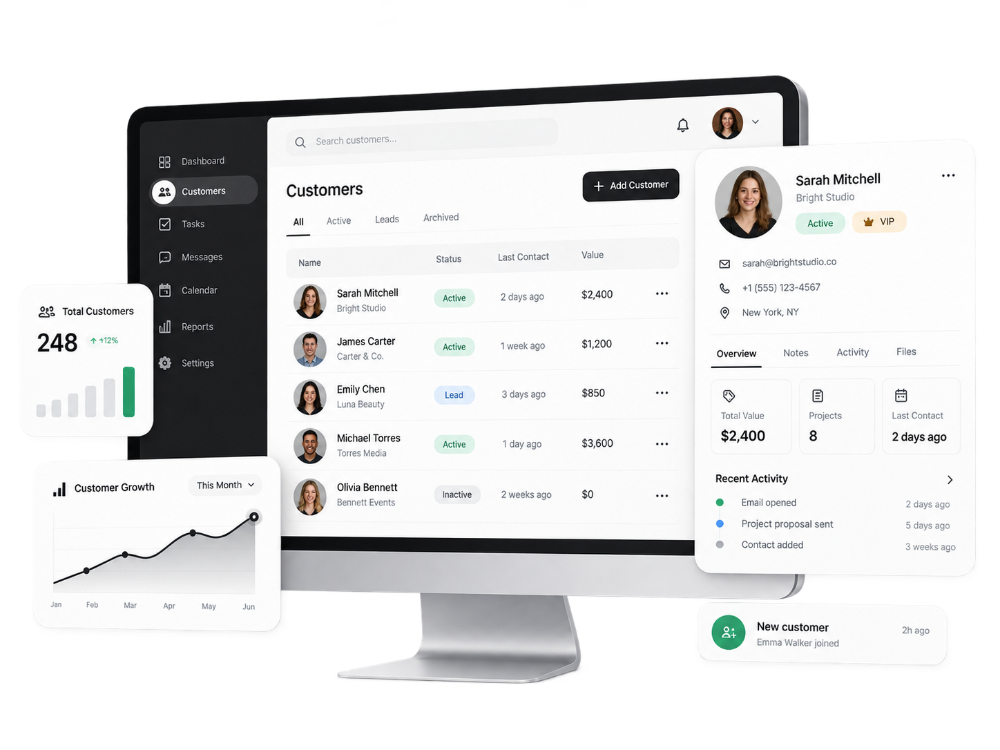

Organiza tus clientes de forma sencilla
Privelux Business es una plataforma pensada para pequeños negocios que necesitan organizar y administrar la información de sus clientes de una manera fácil y rápida.

Todo lo que necesitas para administrar tus clientes
Descubre las herramientas de Privelux Business. Haz clic en cada tarjeta para conocer sus funciones.
-
01 · REGISTRO
Registrar nuevos clientes
Guarda los datos de nuevos clientes de forma sencilla y mantén sus registros disponibles para futuras consultas.
-
02 · CONSULTA
Consultar información
Encuentra rápidamente los registros existentes y consulta la información de cada cliente.
-
03 · EDICIÓN
Actualizar datos
Corrige o actualiza los datos de tus clientes para mantener la información al día.
-
04 · ELIMINACIÓN
Eliminar clientes
Administra tus registros y elimina la información que ya no necesitas conservar.
-
05 · ORGANIZACIÓN
Organizar información
Centraliza la información de tu negocio y evita tener los datos dispersos en diferentes lugares.
¿Por qué elegir Privelux Business?
Una solución sencilla para mejorar la organización y administración de los clientes de tu negocio.
Menos trabajo manual
Evita depender únicamente de registros escritos y simplifica la administración de la información.
Información accesible
Encuentra fácilmente los datos que necesitas y consulta la información de tus clientes desde un solo lugar.
Mayor control
Mantén actualizados los registros de tus clientes y lleva una mejor organización de tu negocio.
Sobre Privelux Business
Nuestro objetivo es ofrecer a pequeños negocios una herramienta sencilla para llevar un mejor control de sus clientes.
Privelux Business busca facilitar tareas que muchas veces se realizan manualmente, permitiendo tener la información organizada en un solo lugar.
Contáctanos
Si quieres conocer más sobre Privelux Business, déjanos tus datos.